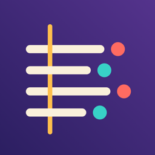

Privacy Policy
Verseloom collects no data.
- On your device only: your songs, saved versions, settings and any audio file you choose as a beat are stored in the app's storage on this device. They are not sent to the developer or anyone else.
- Leaving the device only when you choose: lyrics leave the device only when you share them or export a file yourself, to the place you pick.
- No network services: the app makes no network requests of its own. There is no account, server, advertising, analytics or tracking. Rhyme and syllable data is built into the app and works offline.
- No permissions: Verseloom does not use the microphone, camera, photos, location or contacts. Files are opened only through the file picker when you choose one. Drum sounds are generated on the device.
- Purchases: the optional one-time Pro purchase is processed by Apple through the App Store. The developer does not receive your payment details.
- Deleting data: delete songs in the app (Recently Deleted keeps them for 30 days, or delete them there at once); deleting the app removes all of its data. Whether app data is included in device backups such as iCloud Backup follows your iOS settings.
- Children: Verseloom does not collect data from anyone, including children.
If this policy changes, the new version will be posted on this page. Contact: ppupy1200@gmail.com · Effective October 2026
개인정보 처리방침
Verseloom은 어떤 데이터도 수집하지 않습니다.
- 기기에만 저장: 노래, 저장한 버전, 설정, 비트로 고른 오디오 파일은 이 기기의 앱 저장 공간에만 저장되며 개발자나 다른 곳으로 보내지 않습니다.
- 직접 고를 때만 기기 밖으로: 가사는 사용자가 직접 공유하거나 파일로 내보낼 때만, 사용자가 고른 곳으로 나갑니다.
- 네트워크 서비스 없음: 앱이 직접 하는 네트워크 요청이 없습니다. 계정, 서버, 광고, 분석·추적 도구가 없습니다. 라임·음절 데이터는 앱에 들어 있어 오프라인에서 작동합니다.
- 권한 없음: 마이크, 카메라, 사진, 위치, 연락처를 사용하지 않습니다. 파일은 사용자가 파일 선택 화면에서 고를 때만 엽니다. 드럼 소리는 기기에서 만듭니다.
- 구입: 선택형 한 번 구입(Pro)은 Apple App Store가 처리하며 개발자는 결제 정보를 받지 않습니다.
- 데이터 삭제: 앱에서 노래를 지울 수 있고(최근 삭제됨에 30일 보관, 그곳에서 바로 삭제 가능), 앱을 지우면 모든 데이터가 함께 지워집니다. iCloud 백업 등 기기 백업에 포함되는지는 사용자의 iOS 설정을 따릅니다.
- 어린이: 어린이를 포함해 누구의 데이터도 수집하지 않습니다.
방침이 바뀌면 이 페이지에 새 내용을 게시합니다. 문의: ppupy1200@gmail.com · 시행일 2026년 10월